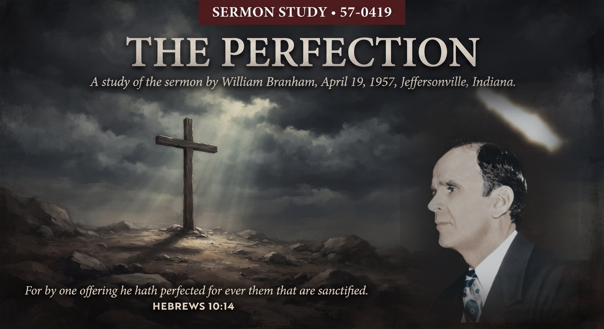

William Branham · April 19, 1957 · Branham Tabernacle, Jeffersonville, Indiana
♫ Listen to or read the full sermon at Voice Of God Recordings →

This message was preached at 12:30 in the afternoon on Good Friday, the same early-afternoon hour Christ hung on the cross, in the middle of the same three-day stretch of services that gave us the Communion sermon the night before and the Entombment message the day after. Before he preaches, Brother Branham gives the platform for a few minutes to Dr. Lee Vayle, a Baptist pastor who had sponsored an earlier meeting, to share a brief testimony of healings. Then he turns to the actual subject of the hour: what the cross Christ was hanging on at that very time of day actually finished.
The whole message is built on a contrast the book of Hebrews draws again and again: the Old Testament priests offered sacrifices continually, year after year, because none of those sacrifices could actually take sin away, only cover it temporarily. Christ's sacrifice is different in kind, not just in size. Hebrews 10:14 states it plainly: "For by one offering he hath perfected for ever them that are sanctified." One offering. Not repeated. Not renewed annually. Finished, in the plain sense of the word, at a specific hour on a specific Friday.
Brother Branham pushes past simple forgiveness into what he calls an actual change of nature. He asks the practical question himself: "How do I get sanctified?" and answers it directly: confess your sins in the presence of the blood of Jesus, and the life that comes from that blood returns to the worshipper and sanctifies him from the very desire for the things of the world. His conclusion, echoing Hebrews 10:2 almost word for word, is blunt: "the worshipper once purged has no more desire of sin." Not merely pardoned while still wanting the old life back. Actually changed at the level of what a person wants.
He gives a way to check the claim against your own experience rather than just take it as doctrine: if you're trying to walk by the Spirit while still lusting after the flesh, in his words, "the Sacrifice hasn't been sufficiently applied to you." That's a hard, testable line. It removes the option of calling yourself sanctified while still being pulled by the exact desires the sacrifice was supposed to remove. The measure isn't what you profess. It's what you still want.
The sermon also takes up a harder logical thread: whether a person can be lost forever after once being saved. Brother Branham's argument runs through the nature of eternal life itself, if a man could be punished forever, he'd have to still possess eternal life to be punished eternally, and if he has eternal life, he is by definition saved. It's a piece of reasoning built on taking the word "eternal" with its full weight rather than a looser sense of "a very long time," and it sits at the center of the assurance the whole message is building toward.
Preaching this message at the actual hour of the crucifixion wasn't incidental scheduling. The congregation wasn't just remembering an event that happened once, long ago. They were sitting with the claim, at the hour it was true, that whatever was being finished on that cross was finished completely enough that nothing since has needed to be added to it. That's a heavier thing to sit with at 12:30 on a Friday afternoon than it is to read about afterward.
Source: The Perfection, preached April 19, 1957. Text © Voice Of God Recordings. This study reflects my own understanding of the message as a believer, not a verbatim reproduction of the sermon.
← Back to Sermon Studies